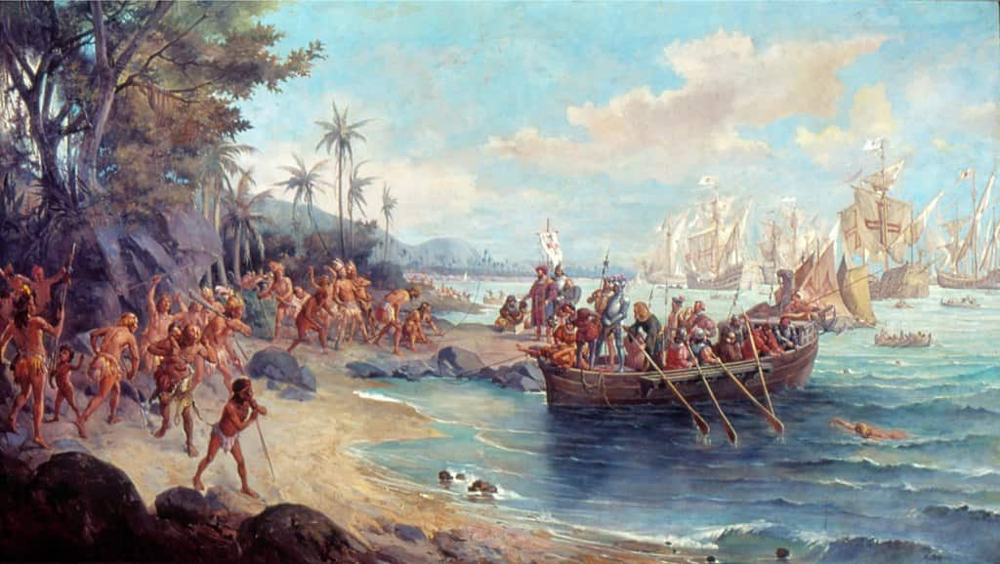
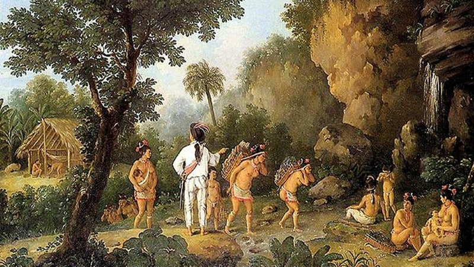

Pré Descobrimento do Brasil: 1500
A Pré-História Brasileira refere-se ao período que se inicia com o primeiro povoamento do território que hoje é o Brasil (acredita-se que tenha começado há 60.000 anos) e terminou em 1500, com o descobrimento do Brasil pelos Portugueses.
Existem vários problemas em relação a essa periodização convencional e aos nomes com os quais denominamos esse período Em primeiro lugar, o termo “Pré-História” é um termo muito combatido pelo meio acadêmico, pois parte de um principio eurocêntrica (ou seja, que a Europa é o centro de tudo), e em qual os povos sem escritas seriam povos sem história. Podemos perceber isso analisando a palavra “Pré-História”. “Pré” significa, ou nos dá a ideia de anterioridade, ou seja, a “Pré-História” seria algo anterior a História
No Brasil essa situação ainda é muito mais grave. A nossa História é normalmente vinculada com a chegada dos Europeus, que nos colonizaram. Desta forma ignoramos todos os povos indígenas que aqui se encontravam, e o pior, ignoramos também o fato de que eles não teriam uma História própria. Assim muito historiadores, e estudiosos da área costumam tratar e se referir a esse período como “Pré-Cabralina”, se referindo a um período anterior a chegada de Pedro Alvares Cabral.Créditos: Info Escola
Período de colonização do Brasil 1500 - 1822
"Sempre que ouvimos falar da colonização portuguesa na América, lembramos logo da colonização do Brasil. Será que o Brasil foi realmente descoberto pelos portugueses? Ou o processo de colonização portuguesa foi uma conquista?
A colonização portuguesa no Brasil teve como principais características: civilizar, exterminar, explorar, povoar, conquistar e dominar. Sabemos que os termos civilizar, explorar, exterminar, conquistar e dominar estão diretamente ligados às relações de poder de uma determinada civilização sobre outra, ou seja, os portugueses submetendo ao domínio e conquista os indígenas. Já os termos explorar, povoar remete-se à exploração e povoamento do novo território (América).
A partir de então, já sabemos de uma coisa, que o Brasil não foi descoberto pelos portugueses, pois afirmando isto, estaremos negligenciando a história dos indígenas (povoadores) que viviam há muito tempo neste território antes da chegada dos europeus. Portanto, o processo de colonização portuguesa no Brasil teve um caráter semelhante a outras colonizações europeias, como, por exemplo, a espanhola: a conquista e o extermínio dos indígenas. Sendo assim, ressaltamos que o Brasil foi conquistado e não descoberto."
Créditos: Info Escola